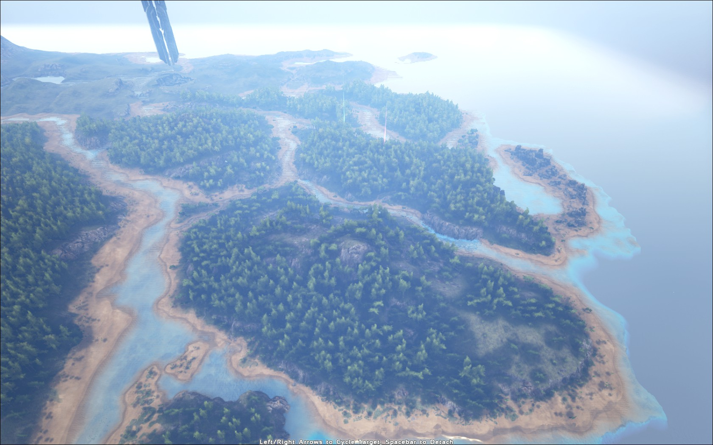
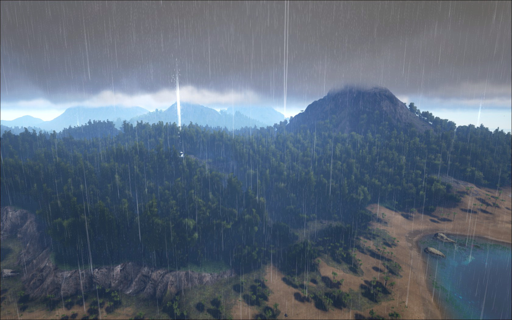
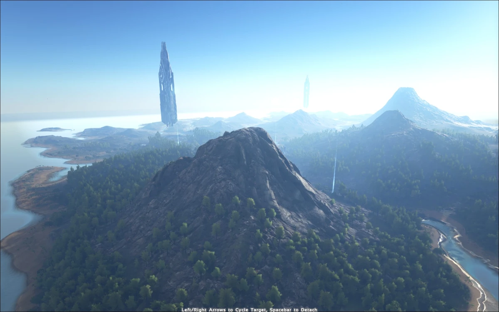

Southern Islets

We will have to be quick when going through the Southern Islets. It should be getting near
sundown when we arrive and we do not want to be here when the moon starts to rise. Take
note of the rivers. While the rivers may be beautiful, they are home to a variety of creatures.
This can range from the adorable and cuddly otters to the patient sarcosuchus, and
territorial spinosaur. As we move through the forested areas, look out for phiomias and
their dung, while keeping an eye out for baryonyxs going into the water so we know where
not to go. As we see the green obelisk in the distance, we will head into the eastern forest
to hold in for the night and move through in the morning.
Eastern Forest - Green Obelisk

As the sun rises, we see the Green Obelisk in all it s glory in the distance. Tall,
monumental, beautiful. But we have to move on. We re going to the rocky mountain in the
distance to catch a view of the island, Far s Peak. As we go through the thick forest, we
have to be on the look out for the same threats as in the southern jungle. Raptors,
Therizinosaurs, Carnotaurus, Compys and our mischievous friends, the Mesopithecus. If
you see anyone head off for the shores, lagoon or plains, draw them back. They are
extremely dangerous areas with Titanaboas, Leeches, too many Raptors, and even Rexes.
Do not go off the trail, and be careful as we climb up the side of Far s peak, for you might
come in contact with a tail of bone.
Far's Peak

Far s Peak is one of the most dangerous spots in our travel. Stay close to our hunters, or
you may just be meat. Be careful if you see a red bird, one Argentavis can slice a man in
two with those long talons. Be careful of petting the Ankylosaurs, if they get angry it s good
night irene. The Pulmonoscorpius, Sabertooth and Raptors are some of our real threats for
they can hide within the rocks, careful of your foot placement. There are so many dangers
here, it s better if we just skip them all, even the big ones like an Allosaurus, Carnosaurs,
and even Rexes. Because no amount of planning will a hundred percent ellude an
encounter with one. But we are the best in the business. We will protect you, and in order
to get you off the peak, we will be riding down onto a lake in the distance with some Royal
Griffins. Just be weary not to pet them too much otherwise it will be a struggle to get them
off you and back to their handlers. Remember, if it isn t one of ours, stay away.